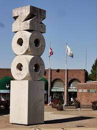
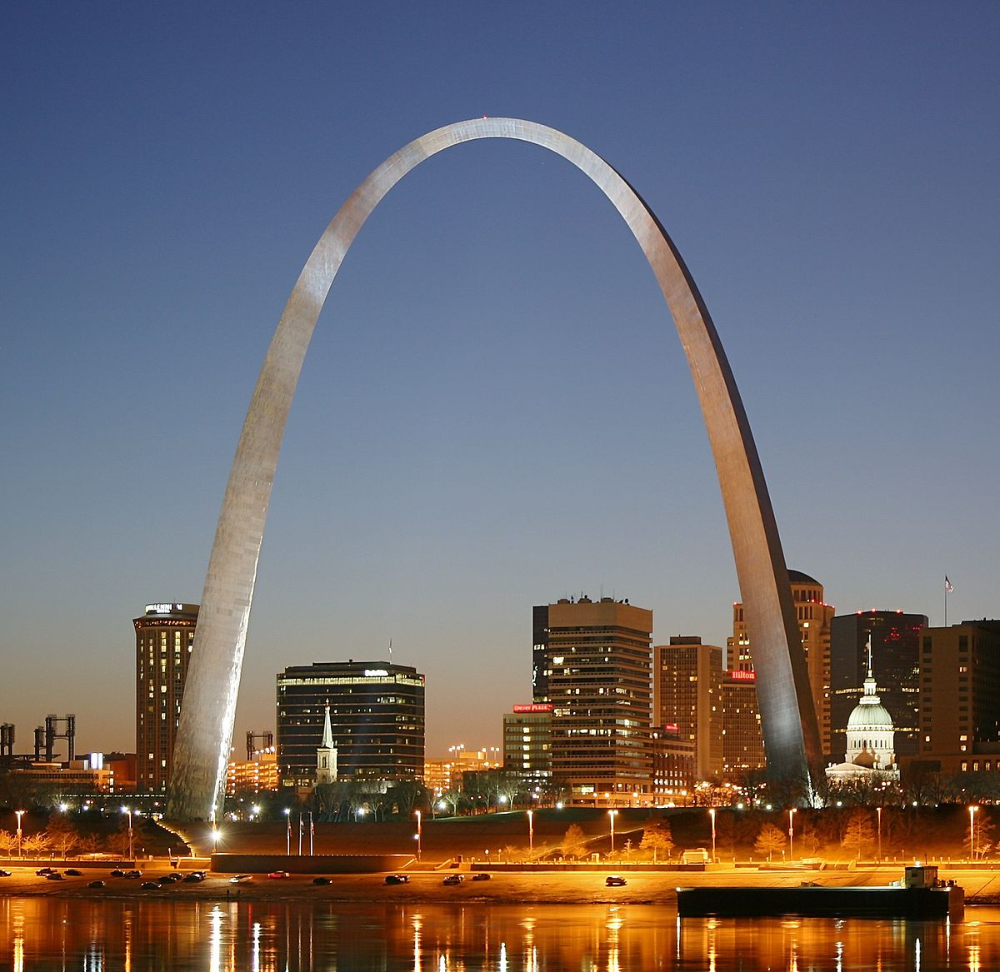
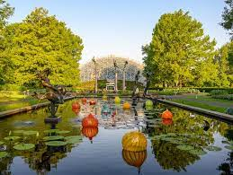
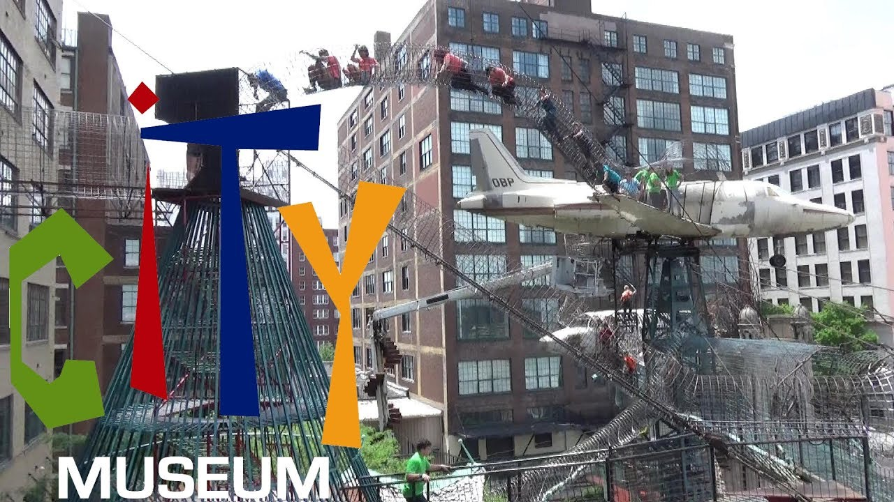
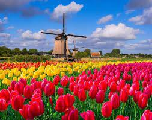
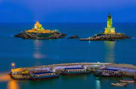

STL - Missouri
St. Louis is the second-largest city in Missouri, United States. It sits near the confluence of the Mississippi and the Missouri Rivers, on the western bank of the latter. For more info, please click here.
Some of the attractions are,
Zoo
Its always fun to spend time here..
Home to over 12,000 animals, representing 500 species, the Saint Louis Zoo is recognized worldwide for its innovative approaches to animal care and management, wildlife conservation, research and education. One of the few free zoos in the nation, the Saint Louis Zoo attracts approximately 3 million visitors annually and is the most-visited attraction in the region. And as a free zoo, visitors are encouraged to come back again…and again!
Zoo Website

STL Arch
The Magnificent Arch...
The Gateway Arch is a 630-foot monument in St. Louis, Missouri, United States. Clad in stainless steel and built in the form of a weighted catenary arch, it is the world's tallest arch, the tallest man-made monument in the Western Hemisphere, and Missouri's tallest accessible building.

Botanical Garden
Love to watch the flowers...

City Museum
This is a sure fun place to hang out with family and friends.
City Museum is a museum whose exhibits consist largely of repurposed architectural and industrial objects, housed in the former International Shoe building in the Washington Avenue Loft District of St. Louis, Missouri, United States.

Holland - Michigan
The Tulip Festival....:)
Tulip Time Festival is an annual festival held in Holland, Michigan. Tulip festivals are held in many cities around the United States of America that were founded or largely inhabited by Dutch settlers.

My Home Town
KanyaKumari is a famous Tourist place in India. Kanyakumari is a coastal town in the state of Tamil Nadu on India's southern tip. It is the meeting point of three oceans-the Bay of Bengal, the Arabian Sea and the Indian Ocean. The place is famous for its beautiful views of sunrise and sunset over the waters and also various natural scenaries.
